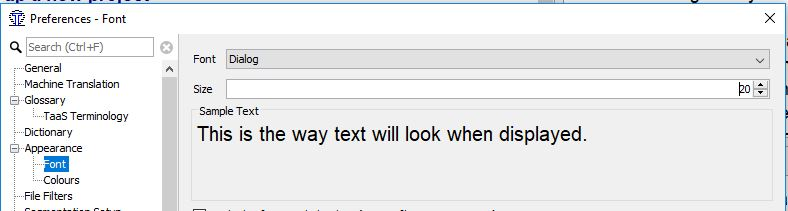
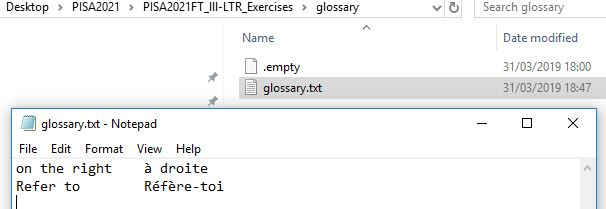
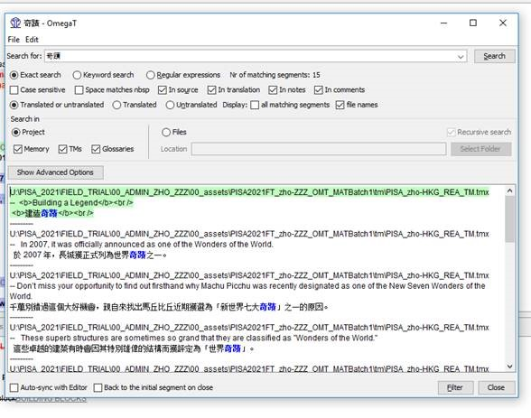

FAQ¶
Can I export the contents of the OmegaT project in Excel ?¶
Yes. To export the contents of the OmegaT project in Excel, go to Tools > Write Project to Excel.
To access the exported Excel, go to Project > Access Project Contents > Root. The Excel will be found in the script_output folder.
Warning
Please remember that the Excel file cannot be reimported in OmegaT. Any change you make in translations in that Excel export needs to be reflected in the OmegaT project.
The size of text in the editor is too small or too big.¶
To change the font size go to Options > Preferences > Font. Change the font size to one you find suitable. This has no impact on the actual font size in the target files, it only changes the display in OmegaT.

How do I install the spellchecker files?¶
A spelling checker is available in OmegaT and you must install the spellchecking dictionary for your language in order to use it. Follow these steps:
- Go to Options > Preferences > Spellchecker.
- Click on Install new dictionary, and a list of languages will appear.
- Select the appropriate language for your language version (e.g. es_AR - Spanish (Argentina) if your language is Spanish and your country is Argentina).
- Press the Install button.
You can close the remaining pop up window. The spellchecker is now installed.
Tip
You can also watch the following video to see those steps in action:
There is no spellchecker for my language.¶
If you cannot find your language in the list when you go to Options > Preferences > Spellchecker. and then clicking on Install new dictionary, please contact the helpdesk and our team will try to find a spellchecking dictionary for you.
Please note that spellchecking dictionaries might not be available for all languages.
I don't have the Unpack project from OMT file item.¶
If you do not see the Unpack project from OMT file option in the Project menu, please follow our OmegaT installation and setup guide (available from the Installation and setup section of these guides) and choose the third path ("Version 5.7.1 of OmegaT is already installed in your machine") to install the customization (again).
If you still cannot see the Unpack project from OMT file option after doing that, please contact the Helpdesk.
How can I correct a typo in a term in the glossary?¶
Yes. Please follow these steps:
- Go to Project > Access Project contents > Glossaries to access your writeable glossary file. The
Glossariesfolder will open, which contains a file namedglossary.txt. -
Open it in your plain text editor (e.g. Notepad):

-
Correct any term that contains an error and Save the file.
Warning
Do not open the glossary file in Microsoft Word or any other similar word processor.
Do we have access to the TMs from previous cycles?¶
Yes. TMs (translation memories) from previous cycles should already be included in your project. You may see translations coming from them in the Matches pane, or you may find them by running a text search (see the relevant section in the guide, under Other useful features > Running concordance searches).
You may also access translations from all previous cycles of the project for your language in MemoryLn.
Info
If you don't see the expected translations in your OmegaT project and in MemoryLn, please contact the Helpdesk.
Can I work in Trados or another CAT tool?¶
The answer is no. OmegaT is specifically customized to edit the files you are working on. Such a customization is not possible in Trados or memoQ. Removing the files from the OmegaT project and translating them separately may damage the files and render them unusable for further use.
How can I find translations searching by the target text?¶
Proceed as follows:
- Press Ctrl+F on your keyboard. The search dialog opens.
- Type the text in the target language that you want to find.
- Check option "In translation" in the search dialog
- Press the Search button.

I only see one 100% match when I am reconciling.¶
If you matches are identical, only one of them will be displayed in the Matches pane to avoid space-consuming duplicates. If you only see one translation in the Matches pane during the reconciliation task, that means the two translators have proposed the exact same translation. Next to the 100% match you will also notice it is written "+1 more".